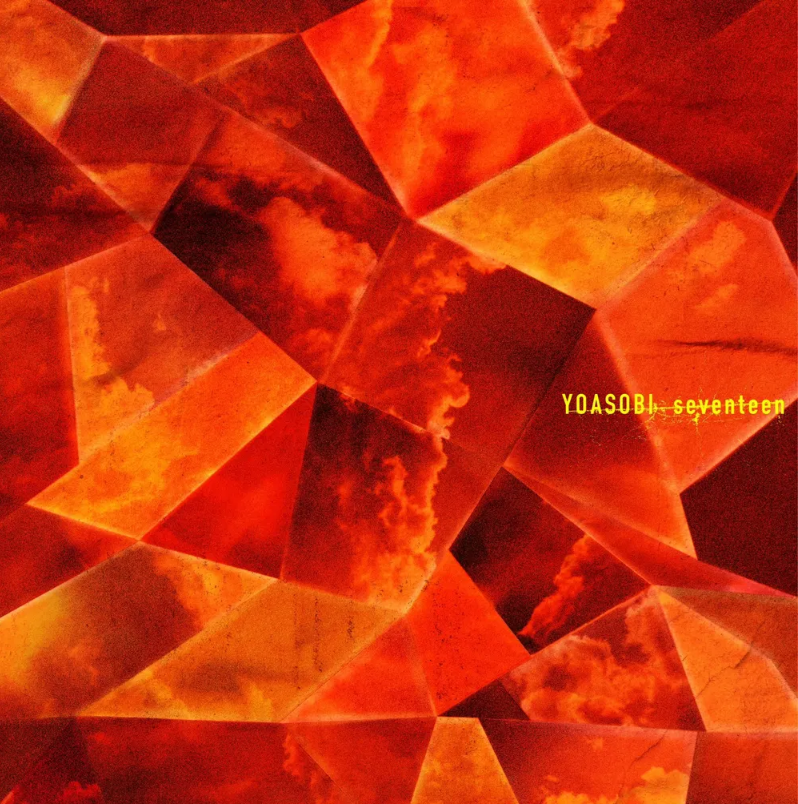

NEWS
2023.3.26

나오키상 수상작가 4명과의 콜라보 프로젝트인 소설 ‘처음의(はじめての)' 의 4번째 콜라보 곡인 ‘세븐틴(セブンティーン）이 3월 27일부터 전달이
결정되었다. 원작은 ‘처음으로 용의자가 된 이야기’ 를 테마로 한, 미야베 미유키의 ‘색이 다른 트럼프’
2023.2.19

애니메이션 【최애의 아이】 오프닝 테마를 담당하는 것이 발표되었다. 곡명은 'アイドル(아이돌)'로, 【최애의 아이】의 스토리 원작자이자 카구야 님은
고백받고 싶어 ~천재들의 연애 두뇌전~의 작가이기도 한 만화가 아카사카 아카가 새로 쓴 단편 소설을 원작으로 한다.
2023.2.13

신곡 ‘어드벤처’의 릴리즈 정보와 원작이 공개되었다. 원작은 작년 일반 에피소드 모집 시 응모되어 채택된 나기의 실화 에피소드 ‘렌즈 너머의
반짝임을’. 음원 전달은 15일 자정부터 스타트.